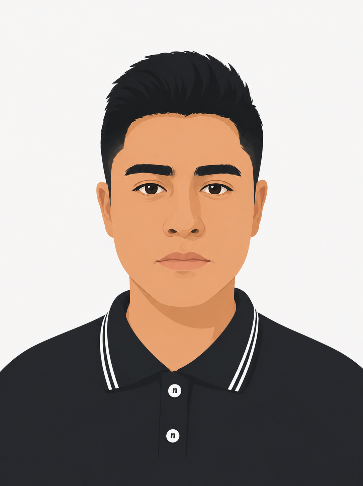

Ingeniero en Sistemas Computacionales con experiencia en desarrollo de aplicaciones web modernas. Manejo tecnologías como JavaScript, React y bases de datos SQL. Orientado a resultados, con enfoque en buenas prácticas, trabajo en equipo y resolución de problemas.

Desarrollador Backend Junior
Desarrollador Frontend Junior
Ingeniería en Sistemas Computacionales
(Titulo en proceso de trámite)